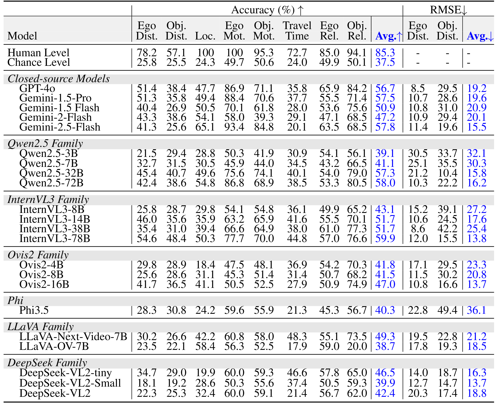

Leaderboard on Ego3D-Bench
Generalist VLMs
Spatial VLMs

Understanding 3D spatial relationships remains a major limitation of current1 Vision-Language Models (VLMs). Prior work has addressed this issue by creating spatial question-answering (QA) datasets based on single images or indoor videos. However, real-world embodied AI agents—such as robots and self-driving cars—typically rely on ego-centric, multi-view observations. To this end, we introduce Ego3D-Bench, a new benchmark designed to evaluate the spatial reasoning abilities of VLMs using ego-centric, multi-view outdoor data. Ego3D-Bench comprises over 8,600 QA pairs, created with significant involvement from human annotators to ensure quality and diversity. We benchmark 16 SOTA VLMs, including GPT-4o, Gemini1.5-Pro, InternVL3, and Qwen2.5-VL. Our results reveal a notable performance gap between human level scores and VLM performance, highlighting that current VLMs still fall short of human level spatial understanding.
BibTex